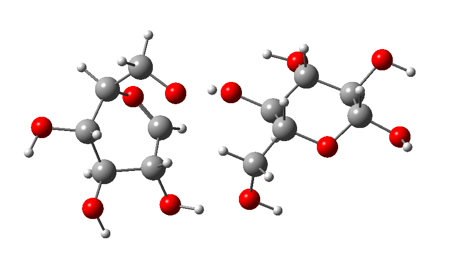
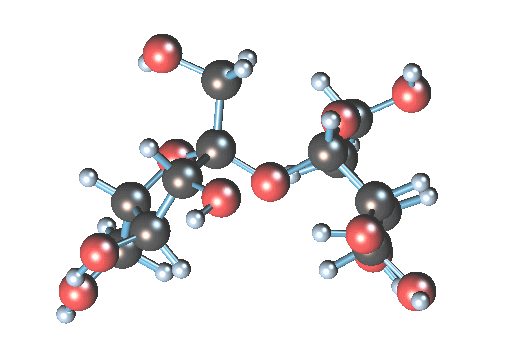

Notre Système Musculaire
A quoi nous sert-il?
Nos muscles sont responsables de tous nos mouvements dans la vie de tous les jours. Ils sont donc en charge de :

- La locomotion : les déplacements du corps.
- Les expressions mimiques : tous les gestes de la vie quotidienne pour nous exprimer.
- Les attitudes ou postures : les positions du corps au repos.
Définition
Les muscles sont formés de plusieurs fibres musculaires groupées en faisceaux primaires ("assemblage de chose en forme allongée") et recouvert d'une enveloppe le protégeant. Ainsi le regroupement de faisceaux primaires forme les faisceaux secondaires combiné ensemble donne l'intégralité du muscle.
Le muscle va être a son tour protégé par un tissu conjonctif, dont la continuation donne les tendons qui unissent les muscles aux os.
Le mouvement va se produire par la contraction ou l'allongement du muscle.
L'aspect du muscle
Notre corps comporte environ 500 muscles, chacun ayant une forme différentes et un rôle différent. Nous pouvons quand même les regrouper par catégories.
- Les muscles fuselés : Gros dans la partie centrale et fins aux extrémités, le biceps et triceps en font partie.
- Les muscles plats et larges : Ceux du front
- Les muscles en éventail : Ceux de la mâchoire et des pectoraux
- Les muscles creux : Ceux qui entourent les yeux et lèvres
- Les muscles circulaires : Possèdent une forme d'anneaux, sa contraction permet de fermer totalement ou partiellement un conduit du corps.
Les différents types de muscles
Mucle Strié
Il se fixe au squelette et permet le mouvement grâce à la contraction. Il se présente sous forme cylindrique et arrondie, il contient une série de stries. Sa couleur rougeâtre forme la chair.
Muscle Lisse
Présent dans la paroi de nombreux organes (vaisseaux sanguins, viscères), de couleur blanc leur contraction sont involontaire et dirigé par le système nerveux autonome.
| Muscle Strié | Muscle Lisse | |
|---|---|---|
| Fibres | Striées | Allongées, placées en couche mince |
| Contraction | Volontaire | Involontaire |
| Localisation | Un peu partout | Parois viscères creux, vaisseaux sanguins |
Le fonctionnement des muscles
La contraction du muscle va s'opérer que lorsque le cerveau lui ordonne en envoyant un message.
Ainsi, de chaque muscle strié part une fibre sensitive qui fait savoir au cerveau ou à la moelle épinière s'il est contracté ou pas. Il reçoit par la suite l'ordre de ne pas changer de position ou d'en changer.
Pour les muscles lisses, nous avons vu qu'ils étaient dépendant du système nerveux autonome. Donc tout va se faire de façon indépendante.
Les muscles ont deux caractéristiques, l'élasticité et l'excitabilité. L'élasticité c'est la capacité que le muscle a de s'allonger et de revenir à sa position initiale. Cette capacité disparaît avec la mort, ce qui empêche le cadavre de revenir en position initiale, d'ou la rigidité du cadavre. L'excitabilité corespond à la sensibilité des msucles aux impulsions nerveuses comme les pincements, le courant électrique etc.
La contraction du muscle
Lors de sa contraction, le muscle réduit sa longueur mais augmente sa grosseur sans que le volume change. Cela s'effectue sous trois phases :
- Phase de latence : C'est le temps qui se passe entre la stimulation nerveuse et le début de la contraction
- Phase de contraction : Le temps durant lequel le muscle reste contracté
- Phase de relâchement : Lorsque le muscle se relâche et revient dans as position initiale.


L'alimentation du muscle
Le muscle produit tous les mouvements de notre corps, ce qui entraine un besoin de sa part en énergie. Il apparaît que l'aliment principal du muscle est le glucose. On le trouve dans les fruits. L'apport en sucre et féculent est important pour lui également.
 Grâce au sang, le glucose arrive directement dans le muscle ou il se transforme en glycogène. La consommation de glucose est plus importante au travail qu'au repos, de plus il augmente la consommation d'oxygène (il capte l'oxygène du sang et expulse le gaz carbonique).
La fatigue musculaire
Au bout d'un certain moment et effort, le muscle se fatigue. L'exercice prolongé, le muscle va avoir besoin de plus d'oxygène que le sang n'est capable de lui fournir. De plus une substance appelée acide lactique va apparaitre pour donner la rigidité musculaire.
Si la fatigue n'est pas trop importante, cela donne des courbatures et des crampes. Pour lutter contre cela, les meilleurs remèdes sont le repos et les massages activant la circulation sanguine afin que qu'il entraîne avec lui les toxines formées dans les muscles.
L'hygiène du système musculaire
Les maladies musculaires
Certaines maladies s'attaquent directement aux muscles, tels que la poliomyélite ou la paralysie infantile. Le virus entre en action déclenchant l'atrophie du muscle et plus tard son invalidité. Ce virus agit directement sur la moelle épinière qui alors n'envoie plus d'influx nerveux aux muscles.
La chaleur
Les muscles produisent de la chaleur quand ils sont en mouvement. C'est pourquoi nous pouvons lutter contre le froid en bougeant. L'exercice physique va faire réagir le corps humain et produire de la chaleur.
Quelques Conseils
Pour garde tes muscles en bonne santé, tu dosi faire attention à ton alimentation et pratiquer de l'exercice physique. Les aliments procurent le glucose nécessaire aux muscles, mais il faut toute fois éviter les graisses qui en s'accumulant forment un surplus et donc un excès de poids. L'exercice physique fait travailler les muscles qui vont ainsi se développer et gagner en élasticité et contractilité, mais il faut faire attention aux blessures

Par exemple en cas d'entorse, cela se produit lorsque nous forçons trop entraînant un étirement ou une déchirure d'un ou de plusieurs ligaments d'une articulation. Il faut appliquer en premier lieu une poche de glace pour diminuer la douleur, puis par la suite mettre un bandage afin d'immobiliser la zone.
La Peau »